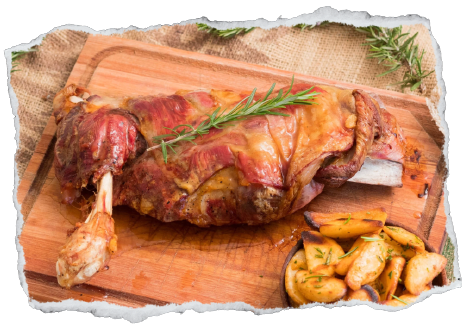

Corte a utilizar: Paleta o pierna de cordero, también pueden ser chuletas (costillas).
1 kilo de carne cortada en daditos o cubitos, o 1 kilo y medio de chuletas cortadas finas.
½ kilo de papas
½ kilo de acelga
2 cebollas
1 cucharada sopera de manteca
½ taza de aceite
½ taza de queso rallado
1 cucharada de perejil picado
1 cucharada de hojitas de menta picada
1 cucharada de mostaza
1 vaso de vino blanco
sal y condimentos a gusto
Preparación

Colocar en una sartén el aceite, las cebollas, los cubos de carne (o las chuletas) previamente salados y condimentados.
Dorar a fuego lento. Luego agregar el perejil, la menta, el vaso de vino y cocinar sobre fuego moderado hasta que se reduzca el líquido y se espese la salsa.
Agregar la cucharada de mostaza antes de retirar del fuego. Aparte:Poner a hervir las papas y la acelga, por separado, en agua y sal.
Con las papas hacer un puré al que se le agregará el queso rallado y luego la acelga picada en trocitos.
Para finalizar condimentar con una pizca de nuez moscada. Servir esta preparación como acompañamiento.